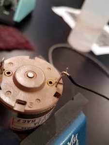
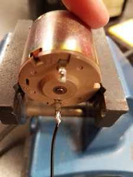
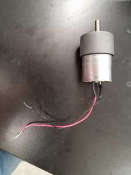
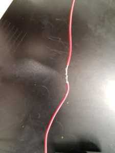
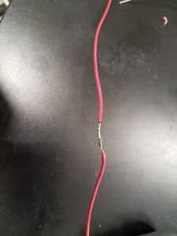
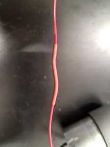

First, soldering leads to terminals on a motor or other device. These two pictures show soldering solid-core wire to motor terminals.

1. Strip wire to sufficient length and make a good mechanical connection to the motor terminals.

2. Solder the joint. The resulting joint should be smooth and shiny.
Next, making a solder joint between stranded wire and solid-core wire.

1. A geared motor with stranded wire. We might need solid-core wire instead, to plug into a breadboard.

2. Wrap the two wires around each other. As before, it's important to make a stable mechanical joint before applying solder.

3. Apply solder. The resulting joint should be shiny and non-lumpy.

4. Add heat-shrink tubing and shrink with a hot-air gun.